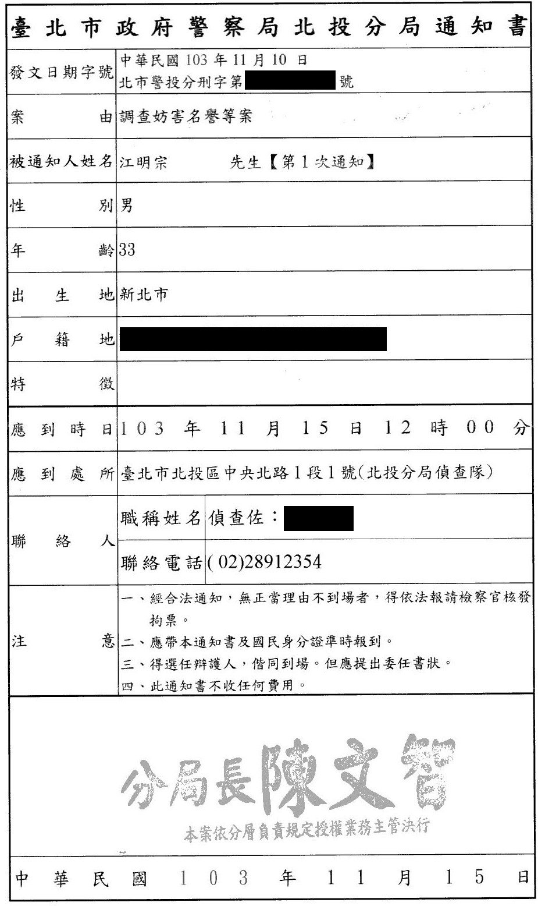
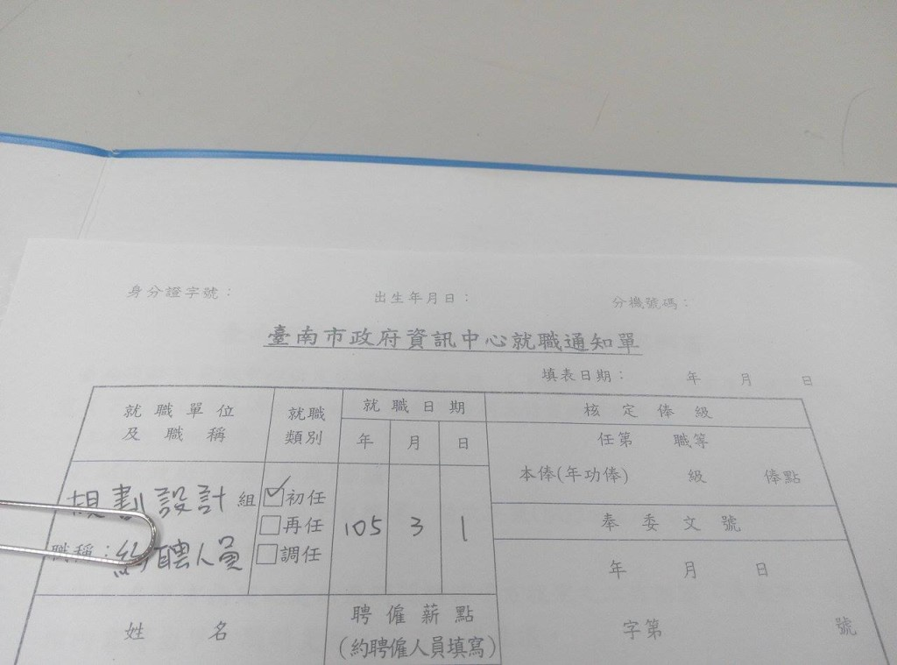

一個科技人的體制外與體制內
kiang @ 臺南大學行政管理系 2020-03-23
kiang === 江明宗
2004 開始全職寫程式
2009 成立工作室接案
2016 首次進入台南市政府
2018 再次進入台南市政府
2020 回到靠接案過活
故事開始於 2013 ...
當爸爸很累
4 個小時要餵一次奶
邊打瞌睡邊洗奶瓶
回頭小孩吐整床要整理
當爸爸真的很累
不信你問曾老師(?)
反黑箱服貿協議
當爸爸已經很累
看政治人物亂來更累
想要繼續待在台灣
開始深入
太陽花學運
衝撞跟改變是兩回事
但衝撞會讓人思考改變
我有一個大膽的想法
大膽的想法一直都有
但經常說說就算了
！！ 森77 ！！
第一次參選 @ 20140522
募款滿 20 萬就登記
放棄 @ 20140906
沒有人會相信半路殺出來的參選人
既有選舉的花費門檻很高
我只活在同溫層
第一次挨告
上法院沒有很難
但是上台北很難
在法庭跟當事人對看更難
第一次參與記者會
一個畫面背後有很多故事
議題沒有絕對的對錯
思考二元對立以外的更多可能
登革熱地圖
很多問題不是寫程式就能夠解決
但你要先學著把問題講出來
台南市政府工作
公務員薪水真的不多
行政工作多到讓人懷疑人生
看不到進入體制內的價值
經濟部
政治與專業之間一直在拉扯
議題發生之前有很多鋪陳
解決問題需要更多的順水推舟
時代力量
沒有包袱不代表能夠做事
沒有共識就無法創造價值
我們離民主還很遙遠
再次參選
有了中央跟地方的經驗
只是沒有在地聲量
人們並不會主動來了解你是誰
再次放棄

比起前一次好很多
預設立場框住了自己
技術並不是政治的特效藥
參與競選團隊
傳統選舉的行程異常緊湊
團隊分工才有辦法顧及細節
有人的地方就會有江湖
再次進入市府
在市長室接電話可以擊垮大部分的人類
每個資訊都很重要，但沒有時間每個都深入
看到的數字代表人命其實很嚇人
智慧城市
技術成果會需要時間累積
每個人都有對智慧的想像，需要先理解人們的想像
你必須讓人們相信你是玩真的
新的開始
資訊業界還是比較容易創造收入
在體制外能夠做的也很多
終於不用再接電話了！